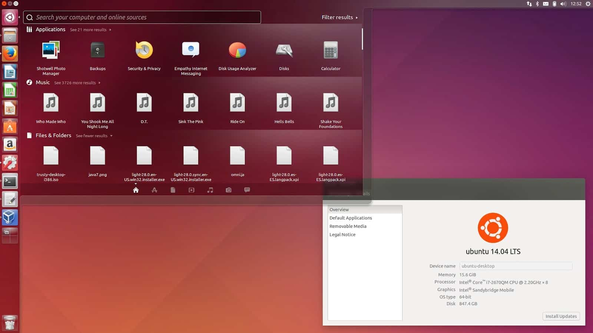
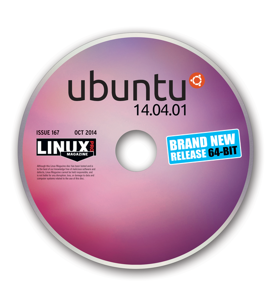
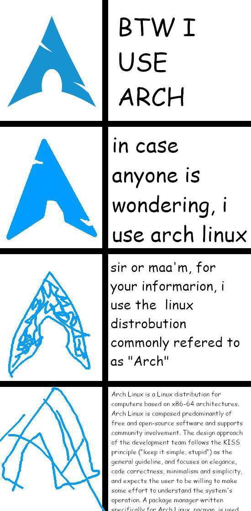
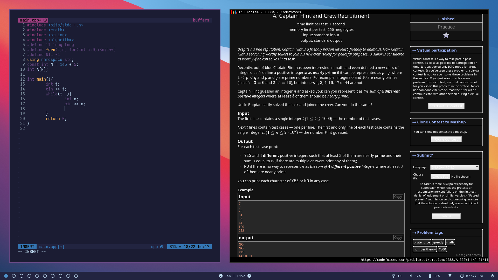
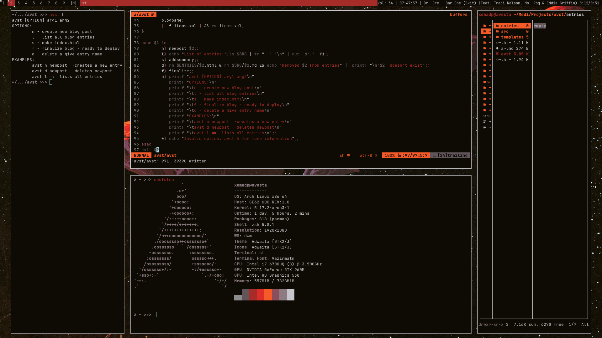

How I got into GNU/Linux
The beginning
I don’t exactly remember the date I first heard of a linux distro, It must’ve been in 2014~ish because I remember getting a cd-pack of ubuntu+kubuntu, bringing it home and installing it. Now, At the time I was very young and didn’t know anything about Operating Systems.one of My uncles taught me the basic concept of Operating systems and that sparked me to try out diffrent operating systems because the idea of more Operating Systems existing was quite exciting to me.Although I was excited, I was quite young and so I Ended up not understanding anything and going back to Windows.
 
Fast forward a couple of years later in January 2019, I had gotten more into programming and read a lot about the GNU project and I decided to give it another shot. This time I downloaded The Linux Mint ISO and booted it onto a flash drive and installed it properly.I used Mint for about 6 month and at times I would feel frustrated because of the dependance I had to Windows.It would be hard to do things in GNU/Linux But at the same time it felt very liberating in the sense that it required me to only learn the basics of the system, for it to be much more elegant and faster than Windows and what it could ever offer, I Immediately made up my mind about using Linux and never going back to Windows ever again. This was ofcource before I learned the True power of Linux, The Terminal.After searching online for guides on how to do things in linux one can almost always find their way back to the terminal, and so was this my experience.At first I was quite reluctant on going near it,always looking for a gui solution. at around this time I decided to Try more Distros and started distro-hopping.I went from Mint to Ubuntu to Pop!_Os to Manjaro and Finally settled for a while.Manjaro, being an arch-basd distrobution, required a lot of fidgeting to get some programs to work correctly, at the same time the existence of AUR helped a lot with the experience.Manjaro was when I really found my way around the terminal and how to use diffrent terminal commands and write shell scripts which sparked an even bigger excitement in me,I have always been fascinated with technology that is very diferrent and weird,And to the novice me, different and weird it was.
Down the rabbithole
Sliding Down The Rabbit Hole
The journey to GNU/Linux is a lot like sliding down a rabbit hole and everyone whos approached linux would agree.First you’re fiddling around with a new Operating System and Then when you come to your senses you find yourself spending 5 hours to automate a task that could’ve been done in 10 minutes if you did it manually.And the deeper you venture into this rabbithole the harder it becomes to come back,At this Point in time I started almost completely switching to the terminal and Also started learning vim.After you wrap your head around vim or emacs, using a what-you-see-is-what-you-get editor just becomes painful and triggering to a certain extent.I also had my music player,rss feed reader,email client and file manager in the terminal and it was becoming more and more apparent that I have to start using a Window manager instead of a full-fledged Desktop Environment, And so I chose i3.The switch from Xfce to i3 was rough, being on Manjaro a lot of the config kept breaking and I had to use lightdm which was pre-configured and wouldn’t load i3 for some reason.So I decided to change to bspwm,that also felt quite bloaty on Manjaro with a preconfigured Xfce environment, so I finally decided I’m gonna Switch to Arch Linux! This was in July 2020.
Arch

In Case You Were Wondering
Installing arch linux was One of the harder obstacles I hit in my Linux journey, but it was also very satisfying when I got it right.I found out that the best way to truly learn about something is the wiki/man pages and honestly there no one out there that can explain something better that the manuals.Bspwm on Arch was a succuss and I kept falling deeper in the rabbithole.I stuck with arch for pretty much until now and have had no problems what so ever. I did reinstall arch once and that was because I had to install windows to rescue my Locked ntfs partition.Arch has been stable for quite a while and I don’t intend on distro-hopping anytime soon, I tried installing gentoo on virtual machine but quite honestly I think it was too much effort for me, for now atleast, I will probabaly try it out in the future.

Bspwm on my Arch Install
Suckless philosophy
With Arch Came the philosophy of simple and bloat-less software.That’s how I started getting my feet wet with suckless software.It started with ST being the terminal and then Dmenu, after that I was using sxiv(Which is not part of the suckless project but still a pretty suckless program to view images) and then once I had gathered All the courage I could, I decided to leave behind Bspwm and start trying out dwm.And so I did.Dwm is now so different compared to bspwm,the only New thing would be that I need to change config.h and apply a couple of patches.I also stopped using lightdm and any other display managers.I maintain my own build of Dwm.I still haven’t made my mind up about my ST build.For now farsi text seems to not be shaped correctly in st even though it is using HarfBuzz for shaping I’ve tried more than a dozen fonts but to no avail.Some other terminals were better at this though, so I know it’s possible and untill I figure that Out I’m not thinking about maintaining my build of st on my github.

My build of Dwm on Arch
You could say I fell for every meme in the Gnu/Linux community,But as I said: the deeper I go into this rabbithole the harder It becomes to look back,I don’t think I’m gonna go back to a Desktop Environment or any other Windeow manager. At this point,I’m pretty satisfied with my setup.
In order to get this blog up and running I wrote my own wrapper called “avst”,It takes a number of markdown files as entries and makes a static website with a blog, about page and others,I started this projects about 24 hours ago and so It needs a lot of polishing before publishing it on github,And so this is where I am right now,I will definitely write more about my setup and diffrenet programs and/or projects I hear About so feel free to subscribe to my blog with this RSS Feed 
Side note:
This was my first blog post ever, so if I was a bit all over the place, I apologize.I wrote this partialy to test avst which is my own wrapper that generates my blog.I hope you enjoyed this. I’ll try to write about more interesting stuff,and I’ll use this blog for an outlet of sorts.